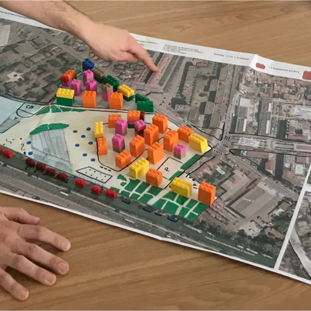

Bootcamp d’innovation interdisciplinaire, de l’analyse d’un problème
complexe au prototypage fonctionnel. Des formations gratuites grâce à nos
partenaires.
Concept de l’Innovation Lab
Interdisciplinaire
Chaque promotion est interdisciplinaire et réunit des profils variés
issus des métiers du design, des technologies, des sciences
sociales, de l’entreprenariat.
Concret
Chaque lab travaille sur une thématique spécifique, et explore des
problématiques concrètes identifiées avec les partenaires
professionnels de la Plateforme.
Responsable
L’innovation Lab place l’impact sociétal au coeur de ses
objectifs, et propose des enseignements qui ouvrent vers des
modèles de circularité, de décentralisation, de co-design et
d’eco-conception.
Métiers
La finalité du lab est de former des chefs de projets capable de
travailler dans différents environnements, d’apporter une analyse
complexe des problématiques et de piloter la recherche de
solutions innovantes par le design centré usagers
Les Formations

Habiter demain : co-construire avec les usagers
Quels outils, protocoles, expériences imaginer pour associer les
usagers à la conception et la gestion de l’habitat de demain ?
Réseaux sociaux de demain : construire le web décentralisé
Comment imaginer une nouvelle forme de réseaux sociaux
décentralisés, autonomes et sur-mesure qui répondent aux besoins
spécifiques de communautés locales ?
Profil des Candidats
Jeunes diplômés, professionnels en reconversion, chercheurs, freelance…
nous sélectionnons des talents complémentaires pour former des équipes
interdisciplinaires :